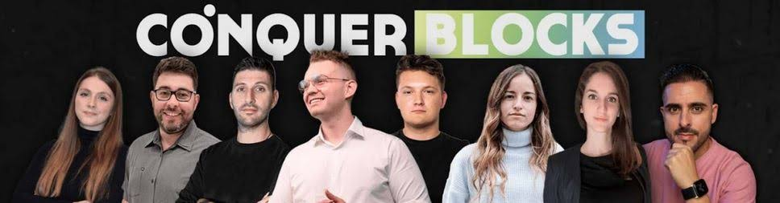

Quiénes somos
Conquer Academy es una academia online especializada en formación tecnológica. Su objetivo es ayudar a los
alumnos a desarrollar habilidades digitales reales, orientadas al mundo profesional y a las nuevas
oportunidades del sector.
La academia ofrece una formación práctica, enfocada en áreas como el desarrollo web, la programación,
blockchain y las nuevas tecnologías.

Nuestra misión
Nuestra misión es formar a personas preparadas para afrontar los retos del entorno digital actual. Para ello,
ofrecemos contenidos claros, prácticos y orientados a que cada alumno pueda avanzar paso a paso en su aprendizaje.
Buscamos que la formación no se quede solo en teoría, sino que ayude a construir una base sólida para
desarrollar proyectos reales.
Nuestro equipo
Detrás de Conquer Academy hay un equipo de profesionales enfocados en acompañar a los alumnos durante su proceso de aprendizaje.
Alexis
desarrollo y formación digital.
Bienvenido

enfocado en ayudar a los alumnos a avanzar en su camino profesional.
Yolanda

vinculada al acompañamiento y desarrollo de la comunidad educativa.
Aprender haciendo
En Conquer Academy creemos que la mejor forma de aprender tecnología es practicando, construyendo
proyectos y aplicando los conocimientos en casos reales.
Por eso, nuestra formación está orientada a que cada alumno pueda entender, practicar y avanzar con una estructura clara.
Ver cursos disponibles